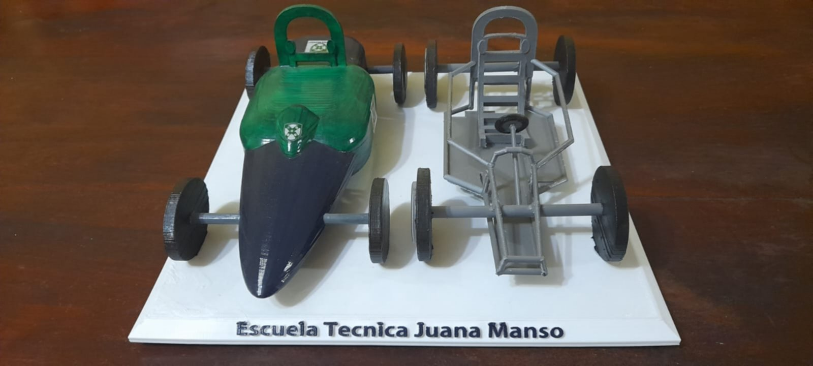

Electrónica
El Técnico en Electrónica está capacitado, de acuerdo a las actividades que se desarrollan en el perfil profesional, para: montar e instalar, operar y mantener componentes, productos, equipos e instalaciones de electrónica analógica y/o digital; realizar proyectos, diseños y desarrollos de tecnología estándar. También pueden probar tarjetas de circuitos impresos para asegurarse de que responden correctamente a las instrucciones del usuario, comprobando que todas las conexiones y los empalmes se hacen correctamente y que no se producen cortocircuitos. En la industria manufacturera, los técnicos electrónicos trabajan en una amplia gama de productos, desde teléfonos, radios y televisiones, entre otros.
